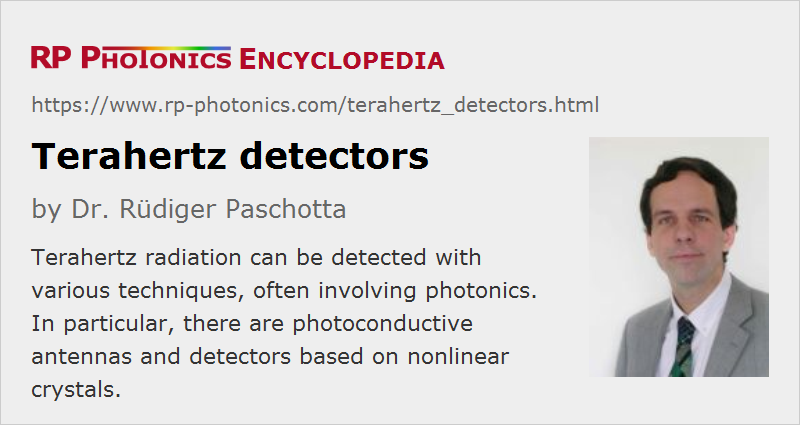

Terahertz Detectors
Definition: detectors for terahertz radiation
German: Terahertz-Detektoren
Categories: photonic devices, light detection and characterization
How to cite the article; suggest additional literature
Author: Dr. Rüdiger Paschotta
Terahertz radiation is typically understood to be electromagnetic radiation in the frequency range from roughly 0.1 THz to 10 THz, corresponding to wavelengths from 3 mm down to 30 μm. These frequencies are hard to detect with conventional means of electronics, which can access only the lower end of the terahertz region. Therefore, various other techniques for terahertz detection have been developed. Some of them involve the use of photonics.
For applications of terahertz detectors, for example in terahertz spectroscopy, communications and imaging, see the article on terahertz radiation.
Photoconductive Antennas
A photoconductive antenna can be used not only for generation of terahertz waves, but also for their detection. Essentially, it consists of two short metallic strips with a photoconductive switch in between them. A kind of pump–probe measurement can be performed, where an optical probe pulse acts on the photoconductive switch while the terahertz wave to be detected passes it. The voltage between the two electrodes of the switch will thereafter be proportional to the electric field of the terahertz wave at the time of the arrival of the probe pulse. The method can also be called electro-optic sampling.
For detecting whole terahertz waveforms, one needs to do repeated measurements with a variable time delay between the terahertz pulse and the laser pulse on the photoconductive detector. Typically, one uses a single ultrafast laser for generating and detecting the terahertz radiation, and a variable optical delay line for varying the time delay. One can call this coherent detection, since one obtains phase information and not only intensities.
By applying a Fourier transform to the obtained voltage (terahertz field strength) versus time, one can obtain the terahertz spectrum. (The method may be regarded as a special form of Fourier transform spectroscopy.) In time-domain spectroscopy, one compares such spectra for example with and without some terahertz-absorbing material between sender and receiver in order to obtain the terahertz absorption spectrum. This often contains features which are characteristic for certain substances.
Detection with Nonlinear Crystals
A terahertz wave and an optical field can interact with each other when meeting in a nonlinear crystal material. One can exploit sum or difference frequency generation and detect the resulting optical product wave. Alternatively, one may interferometrically detect changes of optical phase cause by terahertz radiation.
Bolometers
Bolometers can be used to detect various forms of radiation based on the heat generated upon absorption (→ thermal detectors). This principle can also be applied to terahertz waves. For example, indium antimonide (InSb) bolometers can be used. Typically, one will measure energies of terahertz pulses, not obtaining information on wavelengths, phases etc.; it is a form of incoherent detection.
Suppliers
The RP Photonics Buyer's Guide contains 21 suppliers for terahertz detectors. Among them:
Questions and Comments from Users
Here you can submit questions and comments. As far as they get accepted by the author, they will appear above this paragraph together with the author’s answer. The author will decide on acceptance based on certain criteria. Essentially, the issue must be of sufficiently broad interest.
Please do not enter personal data here; we would otherwise delete it soon. (See also our privacy declaration.) If you wish to receive personal feedback or consultancy from the author, please contact him e.g. via e-mail.
By submitting the information, you give your consent to the potential publication of your inputs on our website according to our rules. (If you later retract your consent, we will delete those inputs.) As your inputs are first reviewed by the author, they may be published with some delay.
Bibliography
| [1] | D. Grischkowsky et al., “Far-infrared time-domain spectroscopy with terahertz beams of dielectrics and semiconductors”, J. Opt. Soc. Am. B 7 (10), 2006 (1990), doi:10.1364/JOSAB.7.002006 |
| [2] | G. Gallot and D. Grischkowsky, “Electro-optic sampling of terahertz radiation”, J. Opt. Soc. Am. B 16 (8), 1204 (1999), doi:10.1364/JOSAB.16.001204 |
| [3] | J. Dai et al., “Terahertz wave air photonics: terahertz wave generation and detection with laser-induced gas plasma”, IEEE J. Sel. Top. Quantum. Electron. 17 (1), 183 (2011), doi:10.1109/JSTQE.2010.2047007 |
| [4] | A. Sell et al., “Phase-locked generation and field-resolved detection of widely tunable terahertz pulses with amplitudes exceeding 100 MV/cm”, Opt. Lett. 33 (23), 2767 (2008), doi:10.1364/OL.33.002767 |
| [5] | P. Uhd Jepsen et al., “Terahertz spectroscopy and imaging – modern techniques and applications”, Laser & Photonics Reviews 5 (1), 124 (2011), doi:10.1002/lpor.201000011 |
| [6] | I. Wilke and S. Sengupta, “Nonlinear Optical Techniques for Terahertz Pulse Generation and Detection – Optical Rectification and Electrooptic Sampling”, chapter 2 in Terahertz Spectroscopy: Principles and Applications, edited by S. L. Dexheimer, Optical Science and Engineering Vol. 131, 41, CRC Press (2007) |
| [7] | D. Mittleman (ed.), Sensing with terahertz radiation, Springer Optical Science 85. Berlin: Springer (2003) |
See also: terahertz radiation, terahertz sources, photoconductive switches, thermal detectors
and other articles in the categories photonic devices, light detection and characterization
|  |
If you like this page, please share the link with your friends and colleagues, e.g. via social media:
These sharing buttons are implemented in a privacy-friendly way!